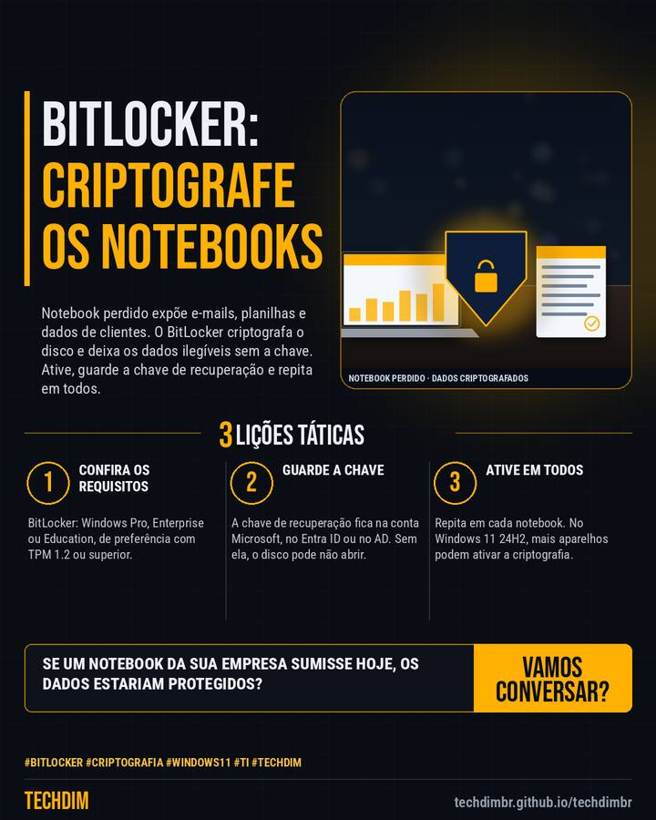

Dica prática
BitLocker nos notebooks da empresa: criptografe o disco em 5 passos contra perda e roubo
Notebook perdido expõe e-mails, planilhas e dados de clientes. O BitLocker criptografa o disco e deixa os dados ilegíveis sem a chave. Ative, guarde a chave de recuperação e repita em todos.

Resumo da dica
- 1) Confira a edição: BitLocker está no Windows Pro, Enterprise e Education. 2) Abra msinfo32 e veja se a criptografia de dispositivo atende aos pré-requisitos (TPM 1.2+)
- 3) Entre como administrador com a conta da empresa ou Microsoft: ela guarda a chave de recuperação. 4) Em Privacidade e segurança, ative Criptografia do dispositivo
- 5) Confirme que a chave de recuperação foi salva e aguarde concluir; só então aparece ativado. Sem a chave, o disco pode não abrir. Repita em cada notebook
Se um notebook da empresa fosse perdido hoje, os dados estariam criptografados? Ative e guarde a chave.
Por que vale a pena
Passo a passo baseado na documentação da Microsoft para criptografar os discos dos notebooks da empresa com BitLocker e proteger os dados em caso de perda ou roubo.
Passo a passo
- Confira os requisitos. BitLocker: Windows Pro, Enterprise ou Education, de preferência com TPM 1.2 ou superior.
- Guarde a chave. A chave de recuperação fica na conta Microsoft, no Entra ID ou no AD. Sem ela, o disco pode não abrir.
- Ative em todos. Repita em cada notebook. No Windows 11 24H2, mais aparelhos podem ativar a criptografia.
Fontes consultadas
Mais do Radar de hoje
- Notícia de tecnologia Agentes de IA em testes acessaram dados de empresas na Índia por credenciais expostas
- Alerta de segurança AOMEI Backupper: servidores de atualização foram adulterados e instalaram backdoor
- Serviço TECHDIM Suporte de TI: alguém acompanhando alertas e atualizações antes que virem problema
Leia também
Este texto resume as fontes citadas na data de publicação. Confira sempre o aviso oficial do fabricante antes de agir em produção.